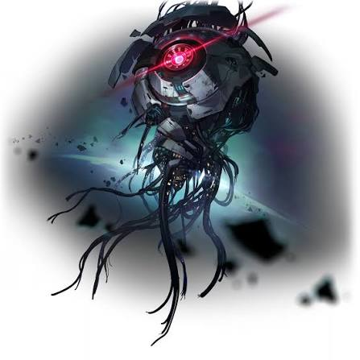

El nacimiento de un Eón da lugar a una Vía. La naturaleza de las Vías sigue siendo un misterio, lo que nos lleva a establecer una analogía de forma que los mortales puedan entenderla: es una especie de concepto filosófico. Las Vías son un concepto filosófico e imaginario relacionado con los ideales de las personas. Cada Eón genera su propia Vía y son libres de usar la energía de sus Vías como quieran, pero también están atados a ella. La Vía se mantiene abierta para siempre y no puede cerrarse, incluso si el Eón desaparece o fallece. Hay personas que andan por las Vías de los Eónes, aunque sea de forma inconsciente. Estas personas se conocen como Andavías y si su voluntad es lo suficientemente fuerte, pueden obtener poder de esa Vía.